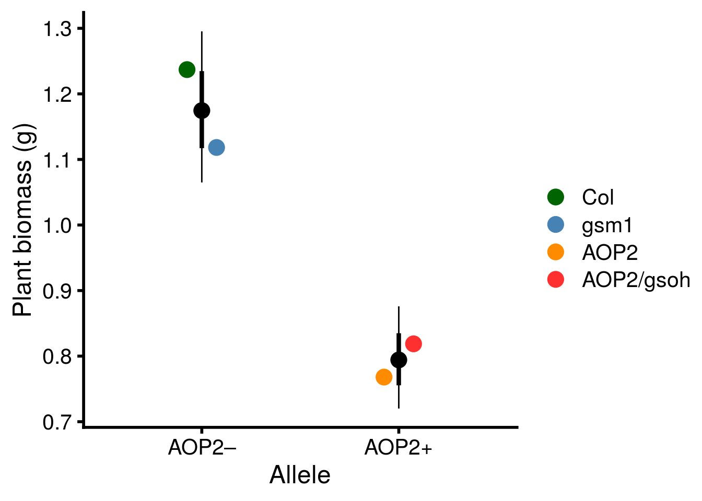

Last updated: 2021-06-24
Checks: 6 1
Knit directory: genes-to-foodweb-stability/
This reproducible R Markdown analysis was created with workflowr (version 1.6.2). The Checks tab describes the reproducibility checks that were applied when the results were created. The Past versions tab lists the development history.
The R Markdown is untracked by Git. To know which version of the R Markdown file created these results, you’ll want to first commit it to the Git repo. If you’re still working on the analysis, you can ignore this warning. When you’re finished, you can run wflow_publish to commit the R Markdown file and build the HTML.
Great job! The global environment was empty. Objects defined in the global environment can affect the analysis in your R Markdown file in unknown ways. For reproduciblity it’s best to always run the code in an empty environment.
The command set.seed(20200205) was run prior to running the code in the R Markdown file. Setting a seed ensures that any results that rely on randomness, e.g. subsampling or permutations, are reproducible.
Great job! Recording the operating system, R version, and package versions is critical for reproducibility.
Nice! There were no cached chunks for this analysis, so you can be confident that you successfully produced the results during this run.
Great job! Using relative paths to the files within your workflowr project makes it easier to run your code on other machines.
Great! You are using Git for version control. Tracking code development and connecting the code version to the results is critical for reproducibility.
The results in this page were generated with repository version 1955523. See the Past versions tab to see a history of the changes made to the R Markdown and HTML files.
Note that you need to be careful to ensure that all relevant files for the analysis have been committed to Git prior to generating the results (you can use wflow_publish or wflow_git_commit). workflowr only checks the R Markdown file, but you know if there are other scripts or data files that it depends on. Below is the status of the Git repository when the results were generated:
Ignored files:
Ignored: .Rhistory
Ignored: .Rproj.user/
Ignored: code/.Rhistory
Ignored: output/.Rapp.history
Untracked files:
Untracked: .genes-to-foodweb-stability.Rproj.swp
Untracked: analysis/foodweb-persistence.Rmd
Untracked: analysis/foodweb-transitions.Rmd
Untracked: analysis/plant-growth-no-insects-lme.Rmd
Untracked: analysis/prep-timeseries.Rmd
Untracked: analysis/structural-stability.Rmd
Untracked: code/summarize_stability_metrics.R
Untracked: data/InsectAbundanceSurvival.csv
Untracked: data/insect_abundance_data_2018-09-26_underneathleaf.csv
Untracked: figures/MAR1-parameter-plot.pdf
Untracked: figures/aop2-genos-coxadjcurve.pdf
Untracked: figures/aop2-genotypes-multistate.pdf
Untracked: figures/cage-dynamics-20C.pdf
Untracked: figures/cage-dynamics-23C.pdf
Untracked: figures/keystone-coxadjcurve.pdf
Untracked: figures/keystone-effect-model-comparison-ratio.pdf
Untracked: output/all.mar1.brm.adj.rds
Untracked: output/all.mar1.brm.unadj.ar2.lag.rds
Untracked: output/all.mar1.brm.unadj.noBRBRonLYER.rds
Untracked: output/all.mar1.brm.unadj.rds
Untracked: output/all.mar1.brm.unadj.xAOP2.rds
Untracked: output/initial.mar1.brm.adj.rds
Untracked: output/initial.mar1.brm.unadj.rds
Untracked: output/time-series-data.RData
Unstaged changes:
Modified: README.md
Deleted: analysis/about.Rmd
Deleted: analysis/community-persistence-keystone.Rmd
Deleted: analysis/critical-transitions-keystone.Rmd
Modified: analysis/index.Rmd
Deleted: analysis/plant-growth-no-insects.Rmd
Deleted: analysis/structural-stability-keystone.Rmd
Deleted: code/AOP2-LYER-Ptoid-persistence.R
Modified: code/README.md
Deleted: code/glm-ftest.R
Modified: code/plot-feasibility-domain.R
Deleted: code/prep-time-series.R
Modified: code/simulate-community-dynamics.R
Deleted: code/temperature-structural-stability-fig.R
Modified: data/README.md
Deleted: data/arabidopsis_clean_df.csv
Modified: figures/AOP2-growth-no-insects.pdf
Modified: figures/MAR1-nonequilibrium-foodchain-AOP2.pdf
Deleted: figures/MAR1-nonequilibrium-initial-temp.pdf
Modified: figures/MAR1-posterior-foodchain-AOP2.pdf
Deleted: figures/MAR1-posterior-initial-temp.pdf
Deleted: figures/initial-foodweb-structural-stability.png
Modified: figures/keystone-gene.pdf
Modified: figures/keystone-structural-stability-forkeynote.pdf
Modified: output/README.md
Deleted: output/full.mv.norm.brm.keystone.rds
Deleted: output/plant-growth-no-insects.RData
Deleted: output/reduced.1.brm.keystone.rds
Deleted: output/reduced.2.brm.keystone.rds
Deleted: output/reduced.3.brm.keystone.rds
Deleted: output/reduced.4.brm.keystone.rds
Deleted: output/reduced.5.brm.keystone.rds
Deleted: output/reduced.6.brm.keystone.rds
Deleted: output/timeseries_df.csv
Note that any generated files, e.g. HTML, png, CSS, etc., are not included in this status report because it is ok for generated content to have uncommitted changes.
There are no past versions. Publish this analysis with wflow_publish() to start tracking its development.
# load data
ChamberNoInsectsDF <- read_csv("data/PreExperimentNoInsectsPlantBiomass.csv") %>%
mutate(Cage = as.character(Cage),
Pot = as.character(Pot))
# conduct analyses at cage level
CageLevelBiomass <- ChamberNoInsectsDF %>%
# sum biomass across both pots
group_by(Cage, Temperature, Richness, Composition, Col, gsm1, AOP2, AOP2.gsoh) %>%
summarise_at(vars(Biomass_g), list(sum)) %>%
# tidy data
ungroup() %>%
select(cage = Cage, temp = Temperature, rich = Richness, com = Composition, Col, gsm1, AOP2, AOP2.gsoh, Biomass_g) %>%
# adjust temp and rich so effect of +1 C is comparable to +1 genotype
mutate(temp = ifelse(temp == "20 C", 0, 3),
rich = rich - 1,
# define orthogonal constrasts to test for above-average allele effects.
# aop2_vs_AOP2 must be included first
aop2_vs_AOP2 = Col + gsm1 - AOP2 - AOP2.gsoh,
mam1_vs_MAM1 = gsm1 - Col, # aop2_vs_AOP2 must be included in model
gsoh_vs_GSOH = AOP2.gsoh - AOP2)# fit model
log_biomass_lmer <- lmer(log(Biomass_g) ~ temp*(rich + aop2_vs_AOP2 + mam1_vs_MAM1 + gsoh_vs_GSOH) + (1|com/temp),
data = CageLevelBiomass)
# reproduce table S5
anova(log_biomass_lmer, type = "1", ddf = "Kenward-Roger") %>%
kable(., caption = "Analysis of variance for plant biomass (log transformed) in the absence of insects.", booktabs = T) %>%
kable_styling(latex_options = c("striped", "hold_position"))| Sum Sq | Mean Sq | NumDF | DenDF | F value | Pr(>F) | |
|---|---|---|---|---|---|---|
| temp | 4.2342063 | 4.2342063 | 1 | 5.220228 | 52.8748142 | 0.0006393 |
| rich | 0.0110385 | 0.0110385 | 1 | 4.951544 | 0.1378439 | 0.7257894 |
| aop2_vs_AOP2 | 1.2616246 | 1.2616246 | 1 | 5.791912 | 15.7545862 | 0.0079189 |
| mam1_vs_MAM1 | 0.0410509 | 0.0410509 | 1 | 5.791912 | 0.5126251 | 0.5018356 |
| gsoh_vs_GSOH | 0.0148935 | 0.0148935 | 1 | 5.791912 | 0.1859833 | 0.6818684 |
| temp:rich | 0.0097817 | 0.0097817 | 1 | 4.427930 | 0.1221488 | 0.7427133 |
| temp:aop2_vs_AOP2 | 0.0035946 | 0.0035946 | 1 | 5.647776 | 0.0448871 | 0.8396490 |
| temp:mam1_vs_MAM1 | 0.0541709 | 0.0541709 | 1 | 5.647776 | 0.6764608 | 0.4441364 |
| temp:gsoh_vs_GSOH | 0.0669588 | 0.0669588 | 1 | 5.647776 | 0.8361506 | 0.3978575 |
# calculate 95% confidence intervals, but first remove higher-order statistical interactions
summary(lme4::lmer(log(Biomass_g) ~ temp + rich + aop2_vs_AOP2 + (1|com), data = CageLevelBiomass)) # dropped com:temp, because it was singular, it also doesn't matter for estimating confidence intervals for genetic effect, it would matter if we were trying to estimate temp, which we are only controlling for here.Linear mixed model fit by REML ['lmerMod']
Formula: log(Biomass_g) ~ temp + rich + aop2_vs_AOP2 + (1 | com)
Data: CageLevelBiomass
REML criterion at convergence: 39.1
Scaled residuals:
Min 1Q Median 3Q Max
-2.7409 -0.4813 0.1360 0.5751 2.4735
Random effects:
Groups Name Variance Std.Dev.
com (Intercept) 0.009476 0.09735
Residual 0.081126 0.28483
Number of obs: 60, groups: com, 11
Fixed effects:
Estimate Std. Error t value
(Intercept) -0.05210 0.07843 -0.664
temp -0.21085 0.02451 -8.601
rich -0.02374 0.05456 -0.435
aop2_vs_AOP2 0.19691 0.04554 4.324
Correlation of Fixed Effects:
(Intr) temp rich
temp -0.469
rich -0.645 0.000
ap2_vs_AOP2 0.000 0.000 0.000aop2_CI <- tidy(lmer(log(Biomass_g) ~ -1 + temp + I(AOP2 + AOP2.gsoh) + I(Col + gsm1) + (1|com),
data = CageLevelBiomass),
conf.int = T, conf.level = 0.95) %>%
filter(term %in% c("I(AOP2 + AOP2.gsoh)","I(Col + gsm1)")) %>%
mutate(allele = c("AOP2","aop2"))
# note that I back transform to original scale for plotting
exp(aop2_CI$estimate[2])[1] 1.17452# get the effect of each genotype
mean_geno <- tidy(lmer(log(Biomass_g) ~ -1 + temp + AOP2 + AOP2.gsoh + Col + gsm1 + (1|com),
data = CageLevelBiomass),
conf.int = T, conf.level = 0.95) %>%
filter(term %in% c("AOP2","AOP2.gsoh","Col","gsm1")) %>%
mutate(allele = c("AOP2","AOP2","aop2","aop2"),
term = factor(term, levels = c("Col","gsm1","AOP2","AOP2.gsoh"), labels = c("Col","gsm1","AOP2","AOP2/gsoh")))
# plot on original scale
# adding a genotype with an aop2 allele to the population doubles the likelihood of species persistence
plot_AOP2_growth_no_insects <- ggplot(aop2_CI, aes(x = allele, y = exp(estimate))) +
geom_point(size = 5) +
geom_point(data = mean_geno, aes(color = term), size = 5, position = position_dodge(width = 0.3)) +
geom_linerange(aes(ymax = exp(estimate + std.error), ymin = exp(estimate - std.error)), size = 1.5) +
geom_linerange(aes(ymax = exp(conf.high), ymin = exp(conf.low))) +
scale_x_discrete(labels = c("AOP2\u2013","AOP2+")) +
scale_y_continuous("Plant biomass (g)") +
xlab("Allele") +
scale_color_manual(values = c("darkgreen","steelblue","darkorange","firebrick1"), name = "") +
theme_cowplot(font_size = 18, line_size = 1)
x11(); plot_AOP2_growth_no_insects
ggsave(plot = plot_AOP2_growth_no_insects, filename = "figures/AOP2-growth-no-insects.pdf", height = 6, width = 8, device=cairo_pdf)
sessionInfo()R version 4.1.0 (2021-05-18)
Platform: x86_64-pc-linux-gnu (64-bit)
Running under: Ubuntu 16.04.7 LTS
Matrix products: default
BLAS: /usr/lib/libblas/libblas.so.3.6.0
LAPACK: /usr/lib/lapack/liblapack.so.3.6.0
locale:
[1] LC_CTYPE=en_US.UTF-8 LC_NUMERIC=C
[3] LC_TIME=en_US.UTF-8 LC_COLLATE=en_US.UTF-8
[5] LC_MONETARY=en_US.UTF-8 LC_MESSAGES=en_US.UTF-8
[7] LC_PAPER=en_US.UTF-8 LC_NAME=C
[9] LC_ADDRESS=C LC_TELEPHONE=C
[11] LC_MEASUREMENT=en_US.UTF-8 LC_IDENTIFICATION=C
attached base packages:
[1] stats graphics grDevices utils datasets methods base
other attached packages:
[1] broom.mixed_0.2.6 lmerTest_3.1-3 lme4_1.1-27 Matrix_1.3-4
[5] cowplot_1.1.1 kableExtra_1.3.4 forcats_0.5.1 stringr_1.4.0
[9] dplyr_1.0.6 purrr_0.3.4 readr_1.4.0 tidyr_1.1.3
[13] tibble_3.1.2 ggplot2_3.3.3 tidyverse_1.3.1 workflowr_1.6.2
loaded via a namespace (and not attached):
[1] nlme_3.1-152 pbkrtest_0.5.1 fs_1.5.0
[4] lubridate_1.7.10 webshot_0.5.2 httr_1.4.2
[7] rprojroot_2.0.2 numDeriv_2016.8-1.1 tools_4.1.0
[10] TMB_1.7.20 backports_1.2.1 bslib_0.2.5.1
[13] utf8_1.2.1 R6_2.5.0 DBI_1.1.1
[16] colorspace_2.0-1 withr_2.4.2 tidyselect_1.1.1
[19] compiler_4.1.0 git2r_0.28.0 cli_2.5.0
[22] rvest_1.0.0 xml2_1.3.2 labeling_0.4.2
[25] sass_0.4.0 scales_1.1.1 systemfonts_1.0.2
[28] digest_0.6.27 minqa_1.2.4 rmarkdown_2.8
[31] svglite_1.2.3.2 pkgconfig_2.0.3 htmltools_0.5.1.1
[34] highr_0.9 dbplyr_2.1.1 rlang_0.4.11
[37] readxl_1.3.1 rstudioapi_0.13 farver_2.1.0
[40] jquerylib_0.1.4 generics_0.1.0 jsonlite_1.7.2
[43] magrittr_2.0.1 Rcpp_1.0.6 munsell_0.5.0
[46] fansi_0.5.0 gdtools_0.2.3 lifecycle_1.0.0
[49] stringi_1.6.2 yaml_2.2.1 MASS_7.3-54
[52] plyr_1.8.6 grid_4.1.0 parallel_4.1.0
[55] promises_1.2.0.1 crayon_1.4.1 lattice_0.20-44
[58] haven_2.4.1 splines_4.1.0 hms_1.1.0
[61] knitr_1.33 pillar_1.6.1 boot_1.3-28
[64] reshape2_1.4.4 reprex_2.0.0 glue_1.4.2
[67] evaluate_0.14 modelr_0.1.8 vctrs_0.3.8
[70] nloptr_1.2.2.2 httpuv_1.6.1 cellranger_1.1.0
[73] gtable_0.3.0 assertthat_0.2.1 xfun_0.23
[76] broom_0.7.6 coda_0.19-4 later_1.2.0
[79] viridisLite_0.4.0 ellipsis_0.3.2